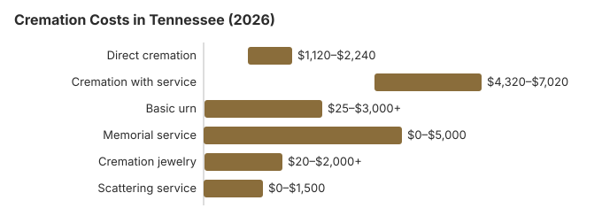

Cremation Costs in Tennessee (2026)
Our Tennessee estimates put a direct cremation at about $1,600 and a funeral followed by cremation at about $5,400. Our Tennessee cremation rate of 42% is 21.4 points short of NFDA's 2025 national projection of 63.4%. Below: what each part costs, the medical examiner's permit and its $25 state fee, how county help works, and the places ashes can be scattered.
Tennessee Cremation Options
Direct Cremation
- The lowest-priced path in Tennessee
- Nothing is held beforehand
- The body goes straight to the crematory
- Ashes handed to the family afterwards
- Any memorial can be scheduled later
Cremation with Service
- A funeral comes before the cremation
- Visitation hours can be included
- Held at a church or the funeral home
- A plain urn is often part of the price
- Closest to a customary funeral
Tennessee Cremation Costs, Piece by Piece
| Charge | Tennessee estimate | Usual range |
|---|---|---|
| Direct cremation | $1,600 | $1,120 – $2,240 |
| Cremation with service | $5,400 | $4,320 – $7,020 |
| Basic urn | $50 – $300 | $25 – $3,000+ |
| Memorial service | $500 – $2,000 | $0 – $5,000 |
| Cremation jewelry | $50 – $500 | $20 – $2,000+ |
| Scattering service | $200 – $600 | $0 – $1,500 |
About the Tennessee figures: they come from our price model rather than calls to Tennessee crematories. Use them as a benchmark for the quotes you collect; they are neither a quote nor professional advice. How they are built is set out in our method ; the limits are in our disclaimer.
State sources: Tenn. Code Ann. § 5-9-101(4).

Cremation, Burial and Faith in Tennessee
At 42%, Tennessee cremates well under the national rate; many families here still follow a church custom of burial. When a family's faith has no objection, our estimates show cremation about $5,100 cheaper than burying in Tennessee.
Cremation Resources
- Funeral Consumers AllianceNonprofit advocacy: compare cremation providers
- Cremation Jewelry GuideMemorial keepsakes and remembrance options
- Cremation vs. Burial CostsSide-by-side cost comparison
- Pet Cremation CostsOptions and prices for pet cremation and memorials
- Final Expense InsuranceCoverage options to help pay for cremation costs
Compare Funeral Costs
- Average Funeral Cost in 2026National cost breakdown with real prices
- Cremation vs. Burial Cost ComparisonSide-by-side price comparison to help you decide
- Funeral Cost BreakdownEvery line item explained: know what you're paying for
- Cheapest Funeral OptionsLower-cost alternatives, with typical price ranges
- Direct Cremation: Most Affordable OptionNFDA 2023 median $2,645 with a family-supplied container (latest available)
- How to Compare Funeral PricesStep-by-step guide to getting the best price
What to Settle With a Tennessee Provider
Points to settle before you sign in Tennessee:
- Ask for the Tennessee home's General Price List up front. The direct cremation entry has to describe what you get, normally the removal from the place of death, the cremation and a temporary urn.
- A casket is not needed. For a direct cremation the FTC Funeral Rule (16 CFR 453.3(b)) requires a Tennessee provider to offer an unfinished wood box or other alternative container.
- Ask the crematory how many days it usually needs after the medical examiner signs the permit, and whether it will deliver the ashes or expects the family to pick them up.
Lowering the Cost of a Tennessee Cremation
Two habits keep the bill down:
- Get three price lists in writing. Tennessee funeral homes must give you their General Price List; read the direct cremation line on each one before you call back.
- Ask for direct cremation unbundled. If a home quotes a package, ask what the plain direct cremation costs and which pieces, such as the transfer, the crematory charge and the permit, are inside that number.
Frequently Asked Questions
What will a Tennessee cremation cost?
Expect about $1,600 for a Tennessee direct cremation and about $5,400 when a full funeral comes first, on our figures.
Which cremation services do Tennessee providers sell?
Tennessee providers usually sell three. The plainest is direct cremation, about $1,600, with no gathering beforehand; a cremation followed by a memorial that the family can hold at any date and place; and a funeral with viewing before the cremation at about $5,400.
What does Tennessee law require before a cremation?
Tennessee has no set waiting period. What it does require is a cremation permit that the county medical examiner has authorized (Tenn. Code Ann. 62-5-504), and the state charges $25 for it.
If a crematory or funeral home mishandles any of this, complain to the Tennessee Board of Funeral Directors and Embalmers (615-741-5062).
Where can ashes be scattered in Tennessee?
Yes. Tenn. Code Ann. § 62-5-508(b)(1) allows cremated remains to be scattered at sea, by air, or in a dedicated scattering area of a cemetery, and private land is available with the owner's permission. Tennessee's state park rules do not address ashes, so ask the park manager before planning a ceremony.
Inside Great Smoky Mountains National Park a permit is needed under 36 CFR 2.62. Remains nobody claims may be interred by the crematory after 180 days, and the Board of Funeral Directors and Embalmers (615-741-5062) issues crematory licenses.
Why are more Tennessee families cremating?
Price is a big reason. By our estimates a direct cremation in Tennessee costs about $5,100 less than a traditional funeral and burial.
How long does a Tennessee cremation take from start to finish?
With no minimum wait in Tennessee, the permit sets the pace: the county medical examiner has to authorize the cremation (Tenn. Code Ann. 62-5-504) and the death certificate is filed with the local registrar. A crematory that holds an unembalmed body for eight hours or more must keep it refrigerated (Tenn. Code Ann. 62-5-507).
The Cremation Association of North America says the cremation itself lasts from about half an hour to more than two hours, depending on the body, before cooling and processing. The funeral home can tell you the return date.
Is a funeral service possible before cremation in Tennessee?
Yes. A Tennessee funeral with the cremation afterwards comes to about $5,400 on our numbers, and quotes normally land between $4,320 and $7,020. Direct cremation is about $1,600.
Embalming is not required by Tennessee law, and Board rules stop a funeral home from claiming otherwise. A home can still make embalming its own condition for an open casket, so ask about a closed casket or a short private viewing. The medical examiner's authorization on the permit is still needed (Tenn. Code Ann. 62-5-504).
More for Tennessee
The Tennessee cremation permit fee and the medical examiner's sign-off
Tennessee's cremation permit comes from the Department of Health's Office of Vital Records, and it has a set price. The state form says the $25 fee is paid to the local health department in the county where the death occurred when the funeral director applies. The applicant also has to get the county medical examiner to sign the permit's authorization box. Once the cremation is done, the crematory mails a copy of the form back to the registrar who issued it (TDH form PH-3752; checked October 29, 2026).
- A county charge on top: some medical examiner offices add their own charge. The Knox County Regional Forensic Center, for example, adds a $45 processing fee to every cremation permit it handles.
- How fast: Knox County answers requests received before 2:00 p.m. by 5:00 p.m. the same day. Later requests are handled the next day.
- Free cremations: if a crematory swears it performed the cremation without charge, the Department of Health refunds the permit fee (Tenn. Code § 62-5-504(b)).
Tennessee cremation oversight and help with the cost
The Tennessee Board of Funeral Directors and Embalmers (615-741-5062) licenses crematories and the funeral homes that arrange cremations; call it to check a license or file a complaint.
Tennessee is not one of the nine states the Funeral Consumers Alliance lists as restricting family-directed care, so once the permit is issued a family can work with a crematory without hiring a funeral home.
No waiting period applies, but the cremation permit must carry the county medical examiner's authorization (Tenn. Code Ann. 62-5-504).
When the family cannot pay
Each county decides for itself whether to pay for the cremation of a poor resident; the county legislative body may do so but does not have to, and a claim needs an affidavit of the cost (Tenn. Code Ann. § 5-9-101(4)). Ask the county mayor's office. If a spouse or child qualifies, Social Security adds a one-time $255, well short of a $1,600 direct cremation.
A Tennessee veteran who is cremated keeps the right to a national cemetery space and marker at no charge. Chattanooga National Cemetery (423-855-6590) and Mountain Home National Cemetery (423-979-3535) take burials and urns; Knoxville (423-979-3535), Memphis (901-386-8311) and Nashville (615-860-0086) national cemeteries now take cremated remains only. The state runs veterans cemeteries in Knoxville (865-577-3228), Nashville (615-532-2238), Memphis (901-543-7005) and at Parkers Crossroads (731-967-4127); see cem.va.gov.
Tennessee checklist
- Get the transfer, the container, the crematory charge and the $25 permit fee listed separately by every provider.
- Ask which medical examiner's office will sign the permit and whether it adds its own fee, as Knox County does.
- When family funds run out, the county mayor's office can say whether indigent cremation is funded locally.
- Save 615-741-5062, the Board's line, in case something goes wrong.